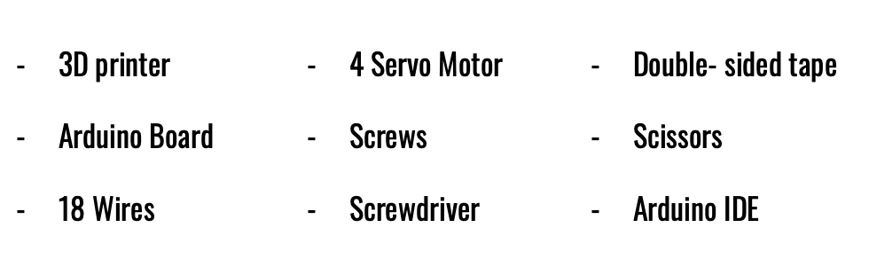
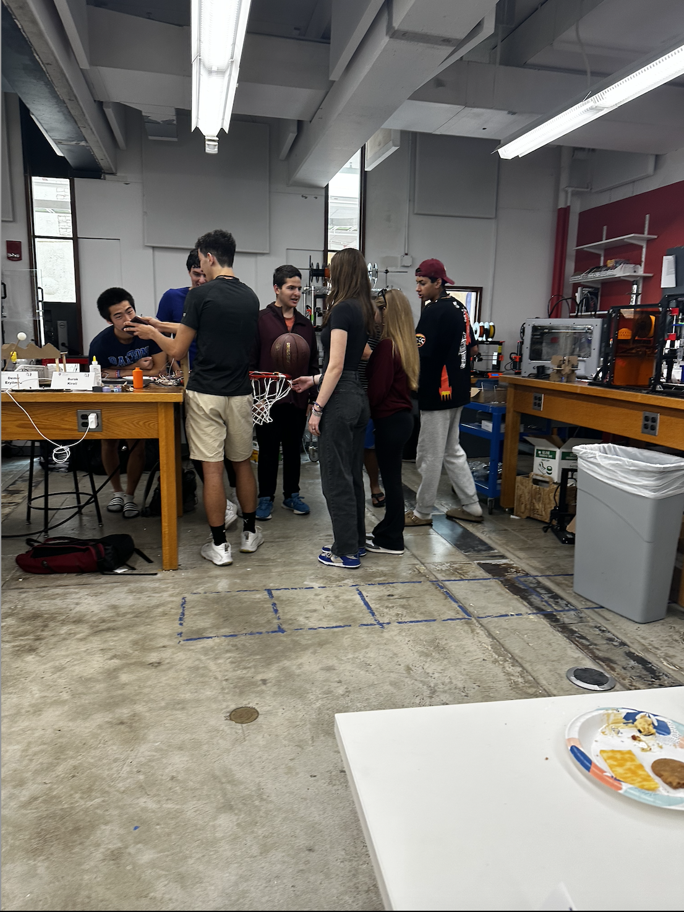
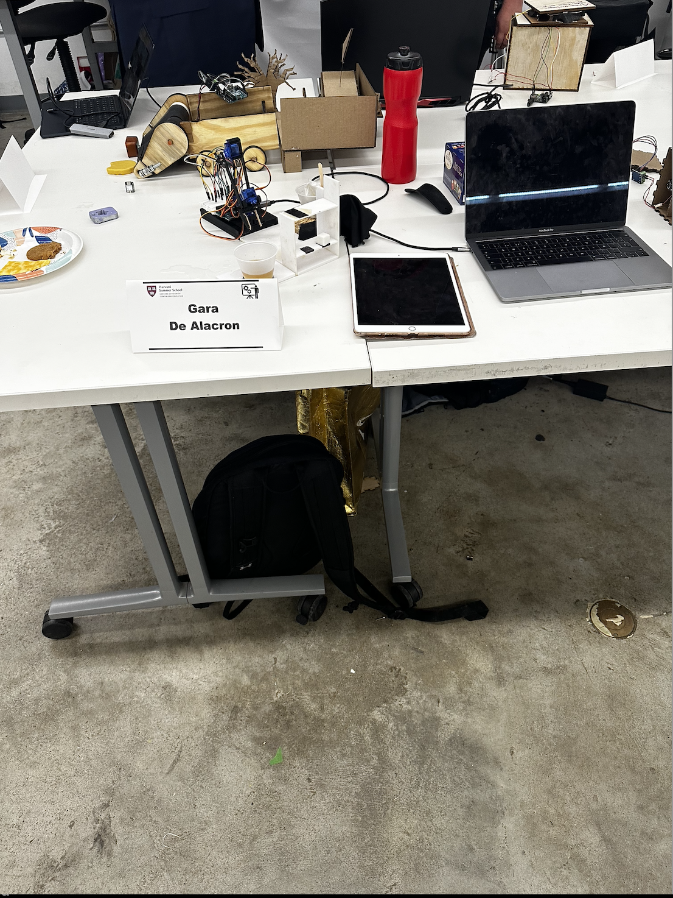
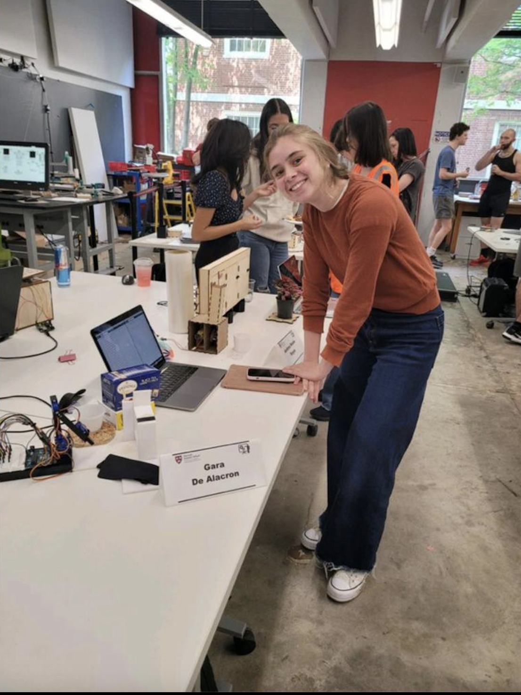

Video
Inspiration
After thinking for four whole weeks, and changing the idea of my project several times thorughout the course of the course, I ended up with the perfect idea. The decision of designing a robotic arm was due to my motivation to integrate technology into mundane chores, such as tea making so that we can enjou moments of relaxation while being free from daily tasks.
TeaBot: The Journey of a Robotic Arm to Serve the Perfect Cup of Tea.
The daily ritual of tea, has been done for centuries due to its ability to provide a moment of relaxation, and this tradition has been brought into the future. One of the main features that makes this robotic arm unique, is that it is portable and easy to carry around. The dimensions and shape are ideal to be used. Below, you can see a demo of how it functions and perhaps as an inspirational source to construct your own.
Fabrication Details
Materials
Process
First thing I did was to measure the servo motor and screws so so that everything could fit perfectly. Then, model the pieces I will need in Fusion 360, and then exported those as stl and opened it on Prusa Slicer, where apart from preparing them to print, I added supports everywhere. Then, I proceed to export it as a g file and send it to the 3D printer. To 3D print just the arm of the robot, which was 6 pieces, it took me around 6 hours.

Then, I went on and start by placing the servos in the right spaces and tight it with screws to the piece as hard as i could to make the robotic arm stable and functional. (this is actually realli important, because when running the code it can move really weird).

Afterwards, I connected each servo to the breadboard, as there wasn't an arduino shield ( which would have looked much neat in terms of wires). So, I then connected to pins 11, 10, 9, 6,3 and proceed to callibrate the servo motor so that they could be all at 90 degrees. For this, I had to run the program for each servo motor, and then remove the piece attach to eat and move it to 90 degrees. I then did the same with all the servos except with the tongs. For this one, I placed the wheel on the last two teeths of the tong and callibrate it with an initial position of 0.
Once all the servos were pretty much callibrated, I went ahead and start coding the code. it took me apporximately one week and a half as I had to make sure that the angles of each of the parts of the robotic arm were adjust correctly so that it was able to pick up the tea and sugars from the drawers. Here is the code.
#includeServo myservo1; Servo myservo2; Servo myservo3; Servo myservo4; int val1 = 90; int val2 = 90; int val3 = 45; int val4 = 0; //botón de té en el pin 4 void setup() { myservo1.attach(11); myservo2.attach(10); myservo3.attach(3); myservo4.attach(6); myservo1.write(val1); myservo2.write(val2); myservo3.write(val3); myservo4.write(val4); } //función que mueve el manipulador a un punto determinado void manipulator(int val1_new, int val2_new, int val3_new, int val4_new, int speedm) { int val1_route = 0; //captura de dirección int val2_route = 0; //dirección superior/inferior int val3_route = 0; //hacia adelante hacia atrás int val4_route = 0; //girar en dirección if (val1 < val1_new) val1_route = 1; if (val1 > val1_new) val1_route = -1; if (val2 < val2_new) val2_route = 1; if (val2 > val2_new) val2_route = -1; if (val3 < val3_new) val3_route = 1; if (val3 > val3_new) val3_route = -1; if (val4 < val4_new) val4_route = 1; if (val4 > val4_new) val4_route = -1; //sincronizar los valores transmitidos con los actuales while (val1 != val1_new || val2 != val2_new || val3 != val3_new || val4 != val4_new) { val1 = val1 + val1_route; myservo1.write(val1); if (val1 == val1_new) val1_route = 0; val2 = val2 + val2_route; myservo2.write(val2); if (val2 == val2_new) val2_route = 0; val3 = val3 + val3_route; myservo3.write(val3); if (val3 == val3_new) val3_route = 0; val4 = val4 + val4_route; myservo4.write(val4); if (val4 == val4_new) val4_route = 0; delay(speedm); } } void loop() { digitalWrite(5, HIGH); manipulator(90, 90, 45, 0, 50); // original position manipulator(102, 70, 90, 0, 50); // go for tea bag manipulator(102, 130, 140, 180, 20); //go for tea bag manipulator(102, 90, 120, 180, 50); // go for tea bag manipulator(75, 160, 163, 180, 50); // go for tea bag manipulator(75, 165, 163, 180, 50); // go for tea bag manipulator(75, 170, 163, 180, 50); // go for tea bag for (int i = 0; i <= 5; i++) { manipulator(75, 145, 163, 180, 50); // dip the tea bag delay(250); manipulator(75, 170, 163, 180, 50); // dip the tea bag } manipulator(75, 170, 163, 180, 50); // introduce tea bag manipulator(75, 150, 163, 180, 50); // introduce tea bag manipulator(75, 80, 100, 180, 50); //introduce tea bag here manipulator(180, 90, 100, 180, 50); // throw tea bag manipulator(180, 120, 100, 180, 50); // throuw tea bag manipulator(180, 120, 100, 0, 20); // throw tea bag manipulator(90, 90, 45, 0, 50); // serve in original !!! manipulator(115, 120, 100, 0, 50); // first sugar !!! manipulator(115, 165, 177, 0, 50); // first sugar !!! manipulator(115, 175, 162, 0, 50); // first piece !!! manipulator(115, 175, 162, 100, 20); manipulator(115, 150, 130, 100, 50); //first piece !!! manipulator(115, 120, 100, 100, 50); // first piece !!! manipulator(115, 90, 90, 100, 50); // first piece !!! manipulator(75, 90, 70, 100, 50); // first piece !!! manipulator(75, 140, 163, 100, 50); // first piece !!! manipulator(75, 160, 163, 0, 20); // first piece !!! manipulator(75, 90, 45, 0, 50); // first piece !!! manipulator(90, 90, 45, 0, 50); // original piece !!! manipulator(103, 120, 100, 0, 50); // second piece !!! manipulator(103, 165, 177, 0, 50); // second piece !!! manipulator(103, 175, 162, 0, 50); // second piece !!! manipulator(103, 175, 162, 100, 20); // second piece !!! manipulator(103, 150, 130, 100, 50); // second piece !!! manipulator(103, 120, 100, 100, 50); // second piece !!! manipulator(103, 90, 90, 100, 50); // second piece !!! manipulator(75, 90, 70, 100, 50); // second piece !!! manipulator(75, 140, 163, 100, 50); // second piece !!! manipulator(75, 160, 163, 0, 20); // second piece !!! manipulator(75, 90, 45, 0, 50); // second piece !!! manipulator(90, 90, 45, 0, 50); // original piece !!! manipulator(110, 90, 130, 0, 50); // ir por una cuchara !!! manipulator(133, 130, 135, 180, 50); // ir por una cuchara !!! manipulator(133, 130, 135, 180, 50); // ir por una cuchara !!! manipulator(133, 110, 150, 180, 50); // ir por una cuchara !!! aqui manipulator(131, 80, 110, 180, 50); // ir por una cuchara !!! aqui manipulator(75, 90, 120, 180, 50); // ir por una cuchara !!! manipulator(75, 150, 160, 180, 50); // ir por una cuchara !!! manipulator(75, 160, 160, 180, 50); // ir por una cuchara !!! manipulator(75, 160, 165, 180, 50); // ir por una cuchara !!! manipulator(75, 160, 160, 180, 50); // ir por una cuchara !!! for (int j = 0; j <= 10; j++) { manipulator(75, 160, 160, 180, 20); // Remover!!! manipulator(75, 160, 167, 180, 20); // Remover!!! manipulator(75, 150, 160, 180, 20); // Remover!!! manipulator(75, 150, 170, 180, 20); // Remover!!! manipulator(75, 150, 160, 180, 20); // Remover!!! manipulator(75, 150, 176, 180, 20); // Remover!!! manipulator(75, 150, 160, 180, 20); // Remover!!! manipulator(75, 150, 170, 180, 20); // Remover!!! } manipulator(75, 160, 180, 180, 50); // quitar una cucharada !!! manipulator(75, 90, 90, 180, 50); // quitar una cucharada !!! manipulator(75, 90, 90, 180, 50); // quitar una cucharada !!! manipulator(75, 90, 90, 180, 50); // quitar una cucharada !!! manipulator(75, 90, 90, 180, 50); // quitar una cucharada !!! manipulator(75, 90, 90, 180, 50); // quitar una cucharada !!! manipulator(130, 90, 130, 180, 50); // quitar una cucharada !!! manipulator(133, 130, 135, 180, 50); // servir en el original !!! manipulator(133, 130, 135, 0, 20); // servir en el original !!! manipulator(133, 110, 150, 0, 50); // servir en el original !!! manipulator(90, 90, 45, 0, 50); // servir en el original !!! manipulator(90, 90, 45, 0, 50); // pposicion original manipulator(120, 90, 45, 0, 50); // recoger pañuelo manipulator(150, 90, 100, 0, 50); // recoger pañuelo manipulator(150, 150, 160, 0, 50); // recoger pauelo manipulator(150, 150, 140, 0, 50); // recoger pañuelo manipulator(150, 160, 130, 180, 20); // recoger pañuelo manipulator(150, 150, 110, 180, 50); // recoger pañuelo manipulator(150, 120, 100, 180, 50); // recoger pañuelo manipulator(90, 90, 45, 180, 50); // recoger pañuelo manipulator(100, 120, 70, 180, 50); // recoger pañuelo for (int j = 0; j <= 10; j++) { manipulator(100, 120, 70, 180, 20); // Remover!!! manipulator(110, 120, 71, 180, 20); // Remover!!! manipulator(100, 120, 70, 180, 20); // Remover!!! manipulator(110, 120, 73, 180, 20); // Remover!!! } manipulator(90, 90, 45, 180, 50); // pposicion original manipulator(120, 90, 45, 180, 50); // dejar pañuelo manipulator(150, 90, 100, 180, 50); // dejar pañuelo manipulator(150, 150, 140, 0, 20); // dejar pauelo manipulator(150, 130, 130, 0, 50); // dejar pañuelo manipulator(150, 120, 110, 0, 50); // dejar pañuelo manipulator(150, 110, 90, 0, 50); // dejar pañuelo manipulator(120, 100, 60, 0, 50); // dejar pañuelo manipulator(110, 100, 50, 0, 50); // dejar pañuelo manipulator(90, 90, 45, 0, 50); // posicion orginal digitalWrite(5, LOW); exit(0); }
I would definetely say that coding was challenging, and was merely based in calculating the right angles for each function I wanted the robotic arm to perform. First thing I wrote was in the initial value of each servo, and its corresponding pin. Inside the void loof function, I wrote manipulator fucntion to control the movement of my robotic arm at a specific point where I declared the value of servo 1, 2, 4, and 4, along with the speed (milliseconds) which with what the tong opens to grab each component of the te.
Day of Presentation.
I loved the format on how we presented the project. It was truly an amazing experience where I was able to show my hard work to others and serve perhaps as an inpsiration to replicate my project with even better features. While exhibiting, someone asked me on what would be the future directions I would like to implement. Also, the robotic arm does its fucntion properly and truly amazed me the fact that was able to work so smoothly while using those blue servos ( which are not ths powerful compared to the metal ones), I would love to continue expanding my project outside the class. Maybe add some music to the robot while is preparing tea, and make it wireless. Furthermore, I could implement a sensor that detects when the teabot hasnt picked up a thing, and forces to pick it up. Adding onto that, I will definetely changed the servos and used as less wires as possible. Anyway, I just want to thank everyone for the help given and the support for my project.
  